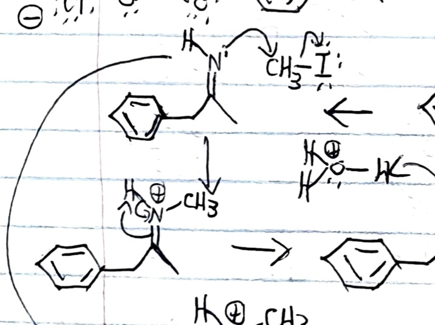

Navigation
Welcome to Your Organic Chemistry Page
We are glad to have your presence here today. Please, take a look and solve your doubts.
The page is divided in two main branches: Reaction Mechanisms and Functional Groups.
Reaction Mechanisms
The Reaction Mechanisms page contains general examples for the transformation of alcohols to carboxylic acids, amines to amides, carboxylic acids to esters, etc. We talk about the mechanism of reaction for reactions like: Synthesis of alcohols and alkyl halides – Williamson ether synthesis - Epoxides from alkenes – Ring opening of epoxides under acidic and basic conditions – Oxidation of alcohols – Replacement of alcohols with halides using SOCl2 or PBr3 – Conversion to tosylates – Reduction of esters, carboxylic acids, aldehydes, and ketones – Grignard Reaction - Addition of Organolithiums – Reduction by sodium borohydride (NaBH4) - Reduction by lithium aluminum hydride (LiAlH4) - Addition of cyanide ion to form cyanohydrins - Addition of hydroxide ion to form hydrates - Addition of alkoxide ions to form hemiacetals. Also, we want to introduce concepts of Organic Chemistry to the people. As the American Chemical Society says: "Organic chemistry is the study of the structure, properties, composition, reactions, and preparation of carbon-containing compounds. Most organic compounds contain carbon and hydrogen, but they may also include any number of other elements (e.g., nitrogen, oxygen, halogens, phosphorus, silicon, sulfur). Organic Chemistry is a highly creative science that allows chemists to create and explore molecules and compounds. Organic chemists spend much of their time developing new compounds and finding better ways of synthesizing existing ones."
Functional Groups
The Functional Groups child page contains fundamental information about the function and characteristics of chemical groups such as -amino, -hydroxy, -alcoxy, -thiol, etc. Each functional group in Organic Chemistry executes a specific function in a reaction. As Morsch, et al., writes in his Organic Chemistry book: "Covalent bonds form when electrons are shared between atoms and are attracted by the nuclei of both atoms. In pure covalent bonds, the electrons are shared equally. In polar covalent bonds, the electrons are shared unequally, as one atom exerts a stronger force of attraction on the electrons than the other. The ability of an atom to attract a pair of electrons in a chemical bond is called its electronegativity. The difference in electronegativity between two atoms determines how polar a bond will be. In a diatomic molecule with two identical atoms, there is no difference in electronegativity, so the bond is nonpolar or pure covalent. When the electronegativity difference is very large, as is the case between metals and nonmetals, the bonding is characterized as ionic. No electronegativity difference between two atoms leads to a non-polar covalent bond. A small electronegativity difference leads to a polar covalent bond. A large electronegativity difference leads to an ionic bond." A bond is something that is created when two orbitals, from two atoms, merge into what might be considered a single orbital. In this overlap, the atoms share electrons, protect each other, unite two chains or two rings into a single molecule, and work with electrical fields to survive in the medium that surrounds them. Richard P. Feynman once said: "A process in which the rearrangement of the atomic partners occurs is what we call a chemical reaction."
Study With Heart
We build this page just for you. Take advantage of every bit of information that you find here.